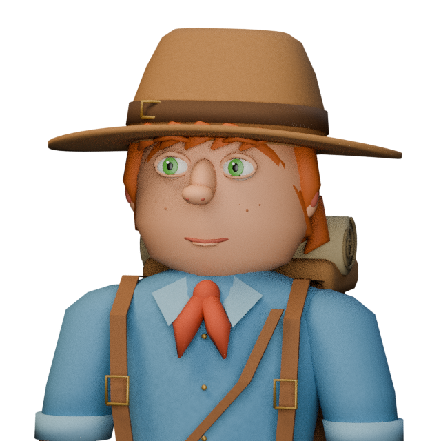
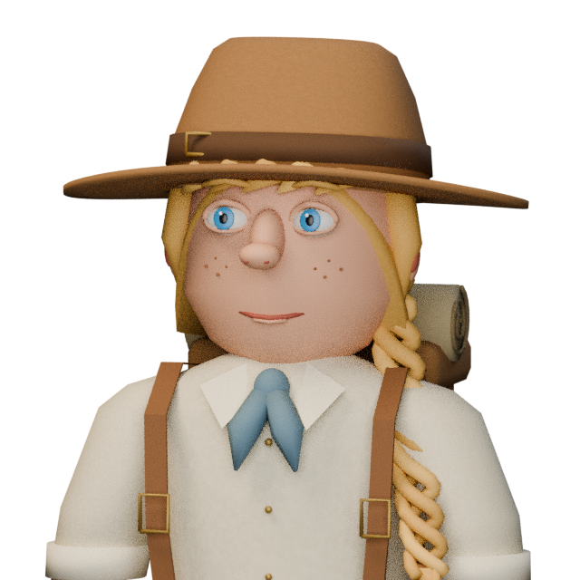

Walls, alpha backgrounds and effects
Both characters are always shown. Facing changes rotate the actual source model in the exports; the gameplay camera stays at 58°. These are read-only art fixtures, not character selection or gameplay.
Four directions at the selected native cell scale
Neutral full-body turnarounds
Source face / hair / gear details

CHR-BOY-01 · source detail
CHR-GIRL-01 · source detailPortraits and neutral turnarounds use a separate labeled lookdev camera and face fill. Eye hue/freckles are source-detail identifiers, not a promise of recognition at 36px.